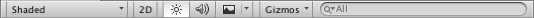

Scene view Control Bar
The Scene view control bar lets you choose various options for viewing the Scene and also control whether lighting and audio are enabled. These controls only affect the Scene view during development and have no effect on the built game.

Draw mode menu
The first drop-down menu selects which Draw Mode will be used to depict the Scene. The available options are:
Shading mode
- Shaded: show surfaces with their textures visible.
- Wireframe: draw meshes with a wireframe representation.
- Shaded Wireframe: show meshes textured and with wireframes overlaid.
Miscellaneous
- Shadow Cascades: show directional light shadow cascades.
- Render Paths: show the rendering path for each object using a color code: Blue indicates deferred shading, Green indicates deferred lighting, yellow indicates forward rendering and red indicates vertex lit.
- Alpha Channel: render colors with alpha.
- Overdraw: render objects as transparent "silhouettes". The transparent colors accumulate, making it easy to spot places where one object is drawn over another.
- Mipmaps: show ideal texture sizes using a color code: red indicates that the texture is larger than necessary (at the current distance and resolution); blue indicates that the texture could be larger. Naturally, ideal texture sizes depend on the resolution at which the game will run and how close the camera can get to particular surfaces.
Deferred
These modes let you view each of the elements of the G-buffer (Albedo, Specular, Smoothness and Normal) in isolation. See documentation on Deferred Shading for more information.
Global Illumination
The following modes are available to help visualise aspects of the Global Illumination system: UV Charts, Systems, Albedo, Emissive, Irradiance, Directionality, Baked, Clustering and Lit Clustering. See documentation on GI Visualisations for informaiton about each of these modes.
Material Validator
There are two Material Validator modes: Albedo and Metal Specular. These allow you to check whether your physically-based materials use values within the recommended ranges. See Physically Based Material Validator for more information.
2D, lighting and Audio switches
To the right of the Render Mode menu are three buttons that switch certain Scene view options on or off:
- 2D: switches between 2D and 3D view for the Scene. In 2D mode the camera is oriented looking towards positive z, with the x axis pointing right and the y axis pointing up.
- Lighting: turns Scene view lighting (lights, object shading, etc) on or off.
- Audio: turns Scene view audio effects on or off.
Effects button and menu
The menu (activated by the small mountain icon to the right of the Audio button) has options to enable or disable rendering effects in the Scene view.
- Skybox: a skybox texture rendered in the Scene's background
- Fog: gradual fading of the view to a flat color with distance from the camera.
- Flares: lens flares on lights.
- Animated Materials: Defines whether or not animated materials show the animation
The Effects button itself acts as a switch that enables or disables all the effects at once.
Gizmos menu
The Gizmos menu contains lots of options for how objects, icons, and gizmos are displayed. This menu is available in both the Scene view and the Game view. See documentation on the Gizmos Menu manual page for more information.
Search box
The rightmost item on the control bar is a search box that lets you filter items in the Scene view by their names and/or types (you can select which with the small menu at the left of the search box). The set of items that match the search filter are also be shown in the Hierarchy view which, by default, is located to the left of the Scene view.